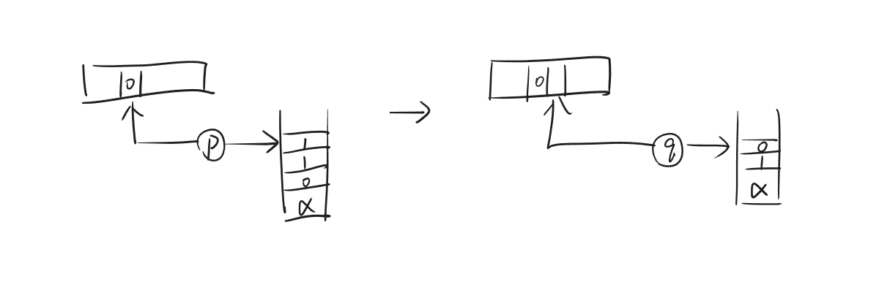
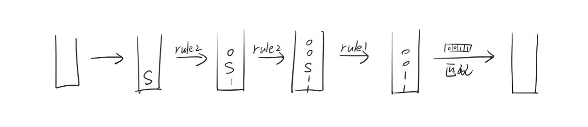
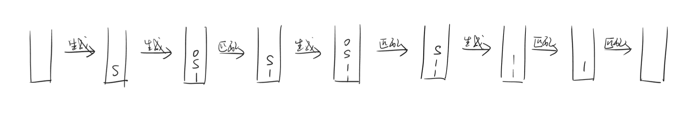

Lec7
Pushdown Automaton (PDA)
之前介绍的 DFA、NFA 和 regular expression 的计算能力有限，有许多 function/language 是无法描述的。因此，我们引入了更强的计算模型——Pushdown Automaton (PDA)。
PDA 可以看作 NFA 外带了一个栈作为内存：
Definition:
对 PDA 进行形式化定义：
$$P=(K,s,F,\Delta)$$
- $K$：状态集合
- $s$：初始状态
- $F$：接受状态集合
- $\Delta$：状态转移关系
尤其要关注的是 $\Delta$，$\Delta$ 是以下形式集合的子集：
$$(K\times\{0,1,e\}\times\{0,1\}^{*})\times(K\times\{0,1\}^{*})$$
- 前一个 $K$：当前状态
- $\{0,1,e\}$：当前输入符号
- 前一个 $\{0,1\}^*$：当前要从栈顶 pop 的字符串（当前栈顶内容）
- 后一个 $K$：下一个状态
- 后一个 $\{0,1\}^*$：要 push 进栈的字符串
Example
$((p,0,110),(q,01))$
如果当前满足以下三个条件：
- 当前状态为 $p$
- 读到的一位为 $0$
- 栈顶从上往下为 $110$
那么，下一个状态会跳转到 $q$。此外，栈顶的 $110$ 会被 pop 掉，取而代之的是 push 进栈 $01$。

Note
如果只想 push，不想 pop，可以写成：
$$((p,0,\alpha),(q,\beta\alpha))$$
Configuration:
在 PDA 中，广义的“状态”由以下三部分组成：
- 当前状态
- 输入字符串中还没有读到的部分
- 当前栈内容
我们称这三部分为 PDA 的 configuration，可以使用三元组表示，每个三元组来自集合：
$$K\times\{0,1\}^{*}\times\{0,1\}^{*}$$
给定两个 configuration $(p,x,\alpha)$ 和 $(q,y,\beta)$。如果左边的 configuration 可以通过一次状态转移变成右边的 configuration，我们记作：
$$(p,x,\alpha)\vdash_P (q,y,\beta)$$
如果左边的 configuration 可以通过多次状态转移变成右边的 configuration，对具体多少次没有要求，我们记作：
$$(p,x,\alpha)\vdash_P^* (q,y,\beta)$$
Acceptance:
有了 configuration 的定义，我们可以定义 PDA 的接受条件：
PDA $P$ 接受字符串 $w$，当且仅当
$$\exists q\in F,~(s,w,e)\vdash_P^*(q,e,e)$$
也就是说，在最终的诸多分支中，要存在某个结果满足三个条件：
- 把输入读完
- 到达接受状态
- 此时栈为空
能被 PDA 接受的字符串集合，称为上下文无关语言 (Context-Free Language, CFL)。
Example
已知 $L=\{w\in\{0,1\}^*:0's=1's\}$，即字符串中 0 和 1 的数量相等，构造对应的 PDA。
$$K=\{q\}$$
$$s=q$$
$$F=\{q\}$$
$$ \begin{align} \Delta=\{& ((q,0,e),(q,0)),\\ & ((q,0,1),(q,e)),\\ & ((q,1,e),(q,1)),\\ & ((q,1,0),(q,e))\} \end{align} $$
我们就考虑栈的相关操作。直观上看，如果当前手上的是 $0$，若栈顶有 $1$，则把 $1$ 拿出来，相当于抵消；若没有（栈顶为 $0$ 或空）则把 $0$ 放进去。如果当前手上的是 $1$ 也同理。
由于多条分支时只要有一条成功即可，因此，如果当前手上的是 $0$，若栈顶有 $1$，也有一条分支做的是把 $0$ 继续叠上去，不过无伤大雅，最后我们不会管这条分支。
已知 $L=\{ww^R:w\in\{0,1\}^*\}$，其中 $w^R$ 是 $w$ 倒过来写，构造对应的 PDA。
$$K=\{l,r\}$$
$$s=l$$
$$F=\{r\}$$
$$\begin{align} \Delta=\{ & ((l,0,e),(l,0)), \\ & ((l,1,e),(l,1)), \\ & ((l,e,e),(r,e)), \\ & ((r,0,0),(r,e)), \\ & ((r,1,1),(r,e))\} \end{align}$$
Context-Free Grammar (CFG)
DFA、NFA、PDA 都属于 language recognizer，用来判断一个字符串是否属于某个 language。CFG 则是 language generator，用来生成某个 language 中的所有字符串。
先举一个简单的例子。考虑以下四条规则：
$$S\rightarrow 0S1$$
$$S\rightarrow A$$
$$A\rightarrow 0$$
$$A\rightarrow e$$
$S$ 和 $A$ 是 non-terminal，其中 $S$ 是 start symbol。$0$ 和 $1$ 是 terminal。
通过依次使用不同规则，可以从 start symbol $S$ 推导出不同的字符串。例如：
$$S\xrightarrow{rule1} 0S1\xrightarrow{rule1} 00S11\xrightarrow{rule2} 00A11\xrightarrow{rule4} 0011$$
Definition:
对 CFG 进行形式化定义：
$$G=(V,S,R)$$
- $V$：有限 symbol 集合，包括 $0$ 和 $1$
- $S\in V\setminus\{0,1\}$：start symbol，有且仅有一个
- $R\subseteq(V\setminus\{0,1\})\times V^*$：有限 rule 集合
使用上述定义，我们对上面的例子进行形式化描述：
- $V=\{S,A,0,1\}$
- $S=S$
- $R=\{(S,0S1),(S,A),(A,0),(A,e)\}$
Generation:
给定 $w,u\in V^*$，如果 $w$ 可以通过某条 rule 直接变成 $u$，我们记作
$$w\Rightarrow_G u$$
如果$w$ 可以通过多次应用 rule 变成 $u$，对具体多少次没有要求，我们记作：
$$w\Rightarrow_G^* u$$
我们可以定义 CFG 生成的字符串：
CFG $G$ 能够生成字符串 $w$，当且仅当
$$S\Rightarrow_G^* w$$
Example
设计一个 CFG，能生成 $\{w\in\{0,1\}^*:w=w^R\}$，即回文字符串。
- $|w|=0\Rightarrow w=e$
- $|w|=1\Rightarrow w=0\text{ or }1$
- $|w|\geqslant 2\Rightarrow w=0u0\text{ or }1u1\text{ where }u=u^R$
因此，CFG 的 rule 可以设计为：
- $S\rightarrow e$
- $S\rightarrow 0$
- $S\rightarrow 1$
- $S\rightarrow 0S0$
- $S\rightarrow 1S1$
Note
上面的 rule 可简写为：
$$S\rightarrow e|0|1|0S0|1S1$$
PDA 与 CFG 的等价性
PDA 与 CFG 是等价的。
从 CFG 到 PDA
想法：
- 在栈中非确定性地生成若干字符串（CFG 所能生成的字符串，分别处在不同分支）
- 与输入字符串进行匹配
- 如果匹配则接受
我们举一个例子：如果 CFG 有以下两条 rule:
- $S\rightarrow e$
- $S\rightarrow 0S1$
考虑输入为 $0011$，我们想达到的效果是：如果其能被 CFG 生成，那么 PDA 能够接受它；如果其不能被 CFG 生成，那么 PDA 会拒绝它。
来看一下栈的情况，我们希望在一位一位读入输入之前就把 $0011$ 生成出来并放入栈中，然后再进行匹配：

但是问题是：只能修改栈顶的内容，因此我们需要匹配与生成交替进行：

综上：若给定 CFG $G=(V,S,R)$，我们可以构造等价的 PDA $P=(K,s,F,\Delta)$，其中：
- $K=\{p,q\}$
- $s=p$
- $F=\{q\}$
- $\Delta$ 包含：
- $((p,e,e),(q,S))$
- $((q,e,A),(q,u))$，其中 $(A,u)\in R$
- $((q,0,0),(q,e))$
- $((q,1,1),(q,e))$
其中前两条针对的是“生成”，后两条针对的是“匹配”。
从 PDA 到 CFG
Warning
笔者对于这一部分依然无法完全理解，请谨慎参考。
需要先对 PDA 进行化简。
Simple PDA:
PDA $P=(K,s,F,\Delta)$ 是 simple 的，当且仅当：
- $|F|=1$：只有一个接受状态
- 对于每个变换 $((p,a,\alpha),(q,\beta))\in \Delta$
- 要么 $\alpha=e$ 且 $|\beta|=1$ （只 push 一个 symbol，不 pop）
- 要么 $|\alpha|=1$ 且 $\beta=e$ （只 pop 一个 symbol，不 push）
任意一个 PDA 都可以转换为 simple PDA。
先看第一个要求：
若原本的 PDA 有多个接受状态，则创建一个新的状态 $f$。
对于所有老的接受状态 $q\in F$，添加变换 $((q,e,e),(f,e))$。
最后让 $F:=\{f\}$。
再看第二个要求：
不满足第二个要求有以下四种情况：
- $|\alpha|\geqslant 1$ 且 $|\beta|\geqslant 1$：同时 pop 和 push
- $|\alpha|>1$ 且 $\beta=e$：pop 多于一个 symbol
- $\alpha=e$ 且 $|\beta|>1$：push 多于一个 symbol
- $\alpha=e$ 且 $\beta=e$：栈没有变化
对于第一种情况：可以直接将 $((p,a,\alpha),(q,\beta))$ 拆分为 $((p,a,\alpha),(r,e))$ 和 $((r,e,e),(q,\beta))$，这样就转变为第二种情况和第三种情况。其中 $r$ 是一个自定义的新状态，为每个变换独有。
对于第二种情况和第三种情况：也是类似地拆分。
对于第四种情况：可以直接将 $((p,a,\alpha),(q,\beta))$ 替换为 $((p,a,0),(q,0))$，再类似地拆分。
CFG Construction:
接下来，simple PDA 怎么变成 CFG？
设 simple PDA 为 $P=(K,s,F,\Delta)$，CFG $G=(V,S,R)$
则按照如下方式构造：
$$V=\{0,1\}\cup\{A_{pq}:(p,q)\in K\times K\}$$
也就是说，对于 $P$ 中任意两个状态，都有一个对应的 symbol。
我们希望指定 $R$ 之后能达到的效果是：
$$A_{pq}\Rightarrow_G^* w$$
当且仅当
$$(p,w,e)\vdash_P^{*} (q,e,e)$$
这样之后，设置 start symbol $S=A_{sf}$，其中 $s$ 是初始状态，$f$ 是唯一的接受状态，那么 PDA 和 CFG 就等价了。
接下来，我们使用类似动态规划的思路。
基础情况：
若 $p=q$，我们知道 $w=e$ 一定满足：
$$(p,w,e)\vdash_P^{*} (p,e,e)$$
因此必有
$$A_{pp}\Rightarrow_G^* e$$
由于所有的 rule 都不会减少字符数量，因此必有
$$A_{pp}\rightarrow e$$
若 $p\neq q$，从 $p$ 读入若干字符到达 $q$，栈也不断变化，会出现两种情况。
第一种情况：
固定 $p,q$，输入 $w$，中间经过某个状态 $r$ 时，栈清空。此时要有 rule:
$$A_{pq}\rightarrow A_{pr}A_{rq}$$
原因：
如果 $w$ 可以被 PDA 接受，则可以拆成 $(p,w_1,e)\vdash_P^{*} (r,e,e)$ 和 $(r,w_2,e)\vdash_P^{*} (q,e,e)$，其中 $w=w_1w_2$。
也就是说 $A_{pr}\Rightarrow_G^{*}(w_1)$，$A_{rq}\Rightarrow_G^{*}(w_2)$。
那么 $A_{pq}$ 在拆成 $A_{pr}$ 和 $A_{rq}$ 后确实可以生成 $w_1w_2=w$。
如果 $w$ 不可以被 PDA 接受，那么上面的做法就不成立，$A_{pq}$ 就没法生成 $w$。
第二种情况：
固定 $p,q$，输入 $w$，中间栈从来没有空过，这样的话，研究从 $p$ 到 $q$ 的第一步和最后一步。
由于是 simple PDA，因此肯定 push 一个 $\alpha$；同理，最后一步肯定也是把这个 $\alpha$ pop 掉。也就是说，如果输入 $w$ 的第一步和最后一步分别是 $((p,a,e),(p',\alpha))$ 和 $((q',b,\alpha),(q,e))$，要有 rule:
$$A_{pq}\rightarrow aA_{p'q'}b$$
原因：
如果 $w$ 可以被 PDA 接受，则将 $w$ 拆成 $w=aw'b$，有 $(p',w',e)\vdash_P^{*} (q',e,e)$。
也就是说 $A_{p'q'}\Rightarrow_G^* w'$。
那么 $A_{pq}$ 在拆成 $aA_{p'q'}b$ 后确实可以生成 $aw'b=w$。
如果 $w$ 不可以被 PDA 接受，那么上面的做法就不成立，$A_{pq}$ 就没法生成 $w$。